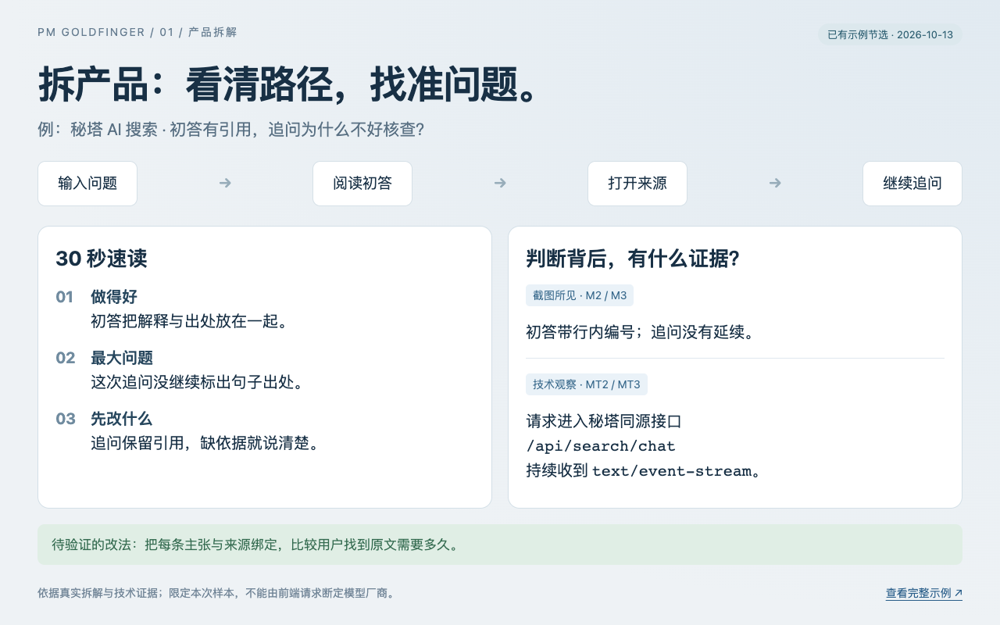
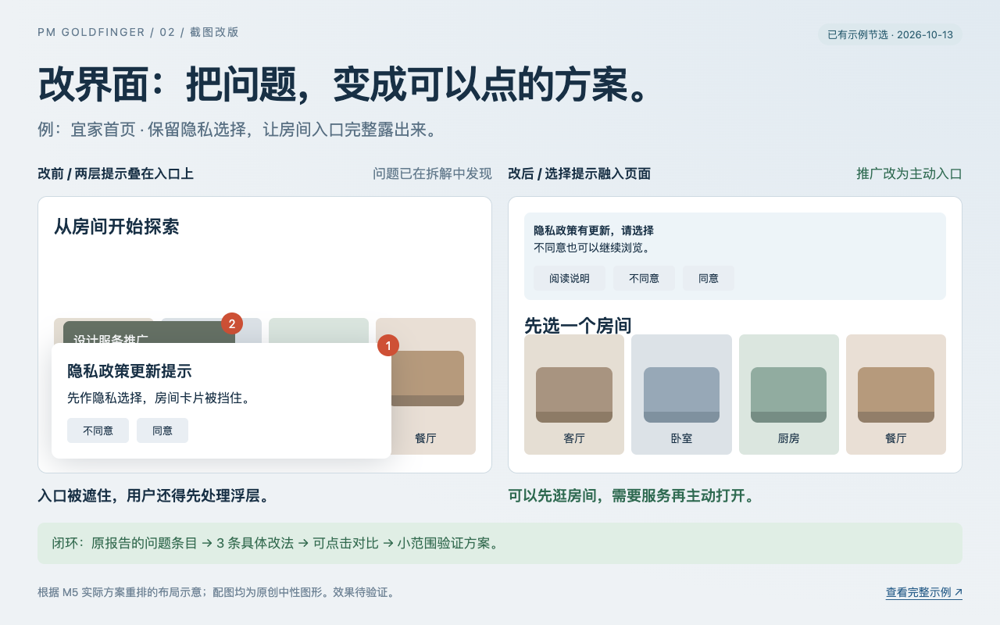
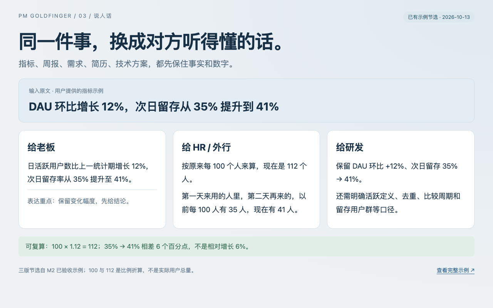
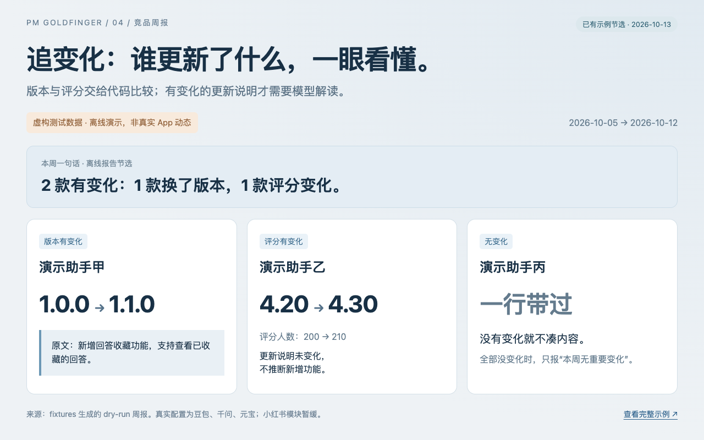

产品经理金手指
给产品经理的 AI 工具箱：拆产品、改界面、说人话、追竞品，把想法变成可核查的成果。
An AI toolkit for product managers: analyze products, redesign screens, explain clearly, and track competitors.
|
 ① 拆产品 · 看清用户怎么用、卡在哪，也能查看技术证据。 看秘塔拆解 · 使用方法 |
 ② 改界面 · 把截图里的体验问题，改成两个可点击原型。 看三组改版 · 使用方法 |
|
 ③ 说人话 · 同一段话，老板、HR、研发各有一版，事实不变。 看指标改写 · 使用方法 |
 ④ 追变化 · 比较竞品版本、评分与更新说明，只报变化。 看离线周报 · 配置与运行 |